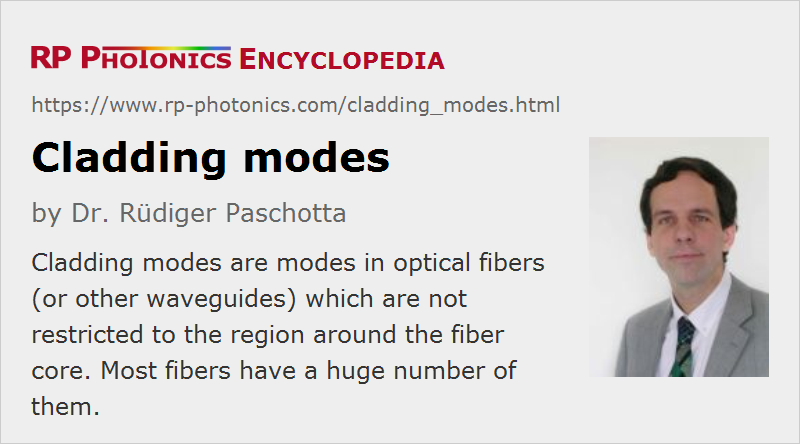

Cladding Modes
Definition: modes in optical fibers (or other waveguides) which are not restricted to the region around the core
Alternative terms: radiation modes, non-guided modes
More general terms: modes
German: Mantel-Moden
Category: fiber optics and waveguides
How to cite the article; suggest additional literature
Author: Dr. Rüdiger Paschotta
Cladding modes in an optical fiber (or other kind of optical waveguide) are modes the intensity distribution of which is not restricted to the region in or immediately around the fiber core. They are also called radiation modes. Although one often does not intentionally feed light into cladding modes, these play an important role in fiber optics.
When a properly focused and aligned laser beam hits the end face of a fiber, most of its power may then propagate in the fiber core. Some fraction of the power, however, will propagate in cladding modes. Depending on the properties of the surrounding coating, cladding modes may either propagate over long distances or may be strongly attenuated by leakage into the coating. The latter situation is common particularly for single-mode fibers. The strong attenuation of cladding modes can be very convenient, e.g. when the launch efficiency for the core is optimized by changing the alignment of the fiber or some coupling optics: a photodetector behind the fiber will then monitor only light launched into the fiber core.
When working with rather short pieces of fiber, e.g. in order to measure some strong absorption in a highly doped rare-earth-doped fiber, incomplete elimination of power in cladding modes may be a problem. This is particularly the case when the polymer coating around the core has to be removed. A possible solution is to splice the short fiber to a longer length of ]passive fiber:sp], which serves to eliminate light in cladding modes. Another possibility is to use a droplet of index-matching fluid on the fiber. For high-power fiber lasers and amplifiers, there are special cladding mode strippers which can remove cladding light at high power levels.
Due to their different propagation constants, core modes and cladding modes usually do not exhibit any noticeable coupling with each other. This means, e.g., that light launched into the core will remain there and not leak into cladding modes, and vice versa. However, such leakage may occur if there is a deviation from the regular core and cladding structure – particularly if there is a periodic disturbance, the period of which is matched to the differences of propagation constants. This effect is utilized in long-period fiber Bragg gratings, which cause loss in some wavelength range by coupling light from the core into the cladding modes.
Propagation of light in an inner cladding is often used for high-power fiber lasers and amplifiers based on double-clad fibers. Here one exploits the fact that it is much easier (and requires a much lower beam quality) to launch light into a multimode cladding. The pump light can still be absorbed in the core, because most cladding modes have some overlap with the core region.
Questions and Comments from Users
Here you can submit questions and comments. As far as they get accepted by the author, they will appear above this paragraph together with the author’s answer. The author will decide on acceptance based on certain criteria. Essentially, the issue must be of sufficiently broad interest.
Please do not enter personal data here; we would otherwise delete it soon. (See also our privacy declaration.) If you wish to receive personal feedback or consultancy from the author, please contact him e.g. via e-mail.
By submitting the information, you give your consent to the potential publication of your inputs on our website according to our rules. (If you later retract your consent, we will delete those inputs.) As your inputs are first reviewed by the author, they may be published with some delay.
See also: fibers, waveguides, fiber optics, modes, cladding mode strippers
and other articles in the category fiber optics and waveguides
|  |
If you like this page, please share the link with your friends and colleagues, e.g. via social media:
These sharing buttons are implemented in a privacy-friendly way!